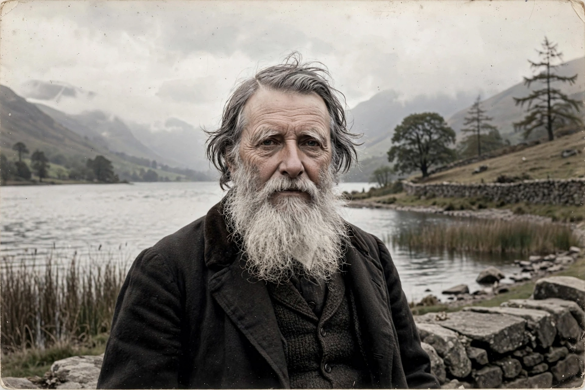

John Ruskin
From Wikipedia, the free encyclopedia

John Ruskin (8 February 1819 – 20 January 1900) was an English writer, philosopher, art historian and critic of the Victorian era — the most influential art critic in English, a patron and champion of J. M. W. Turner and the Pre-Raphaelite Brotherhood, a pioneering conservationist, and a social thinker whose attack on industrial capitalism (Unto This Last, 1860) shaped the Labour movement and influenced Mahatma Gandhi.
Art criticism
Modern Painters (1843–60), begun in defence of Turner against his detractors, grew into a vast study of nature, art and perception with the maxim 'truth to nature'. The Seven Lamps of Architecture (1849) and The Stones of Venice (1851–53) exalted Gothic architecture as the expression of free labour and moral health — and, in the 'Nature of Gothic' chapter, became a founding text of the Arts and Crafts movement. His 1878 libel defeat by Whistler (a farthing's damages that bankrupted them both) marked his public decline.
Social thought and legacy
Ruskin's political economy — wealth as 'life', the illth of riches, education and craft as social remedies — ran through the Guild of St George (his utopian foundation), the Working Men's College and Oxford's Ruskin School of Drawing, which he endowed as its first Slade Professor. Tolstoy called him one of the most remarkable men of his age; Proust translated him; his conservation ethic seeded the National Trust (whose founders he inspired).